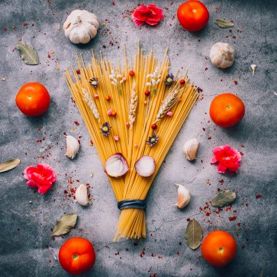
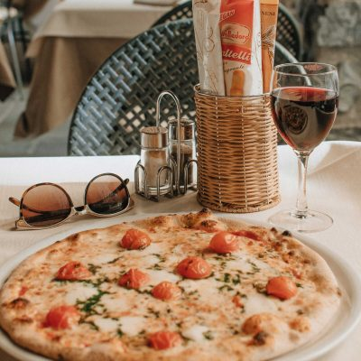
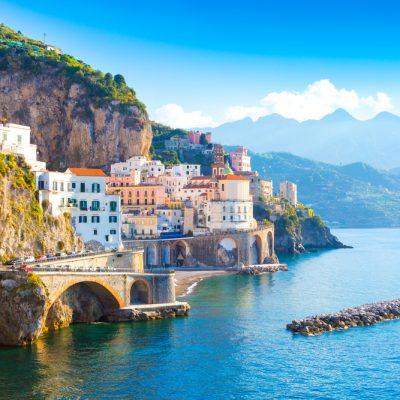

Itālija ir romantiska un skaista valsts ar neskaitāmi daudz vietām, ko apmeklēt un redzēt, piemēram, slīpais pizas tornis un pasakainā Venēcija, bet lai izbaudītu Itālijas burvību pilnībā, ir jāiepazīstās ar itāļu virtuvi. Ēdienam ir ļoti liela nozīme Itālijas kultūrā un šī iemesla dēļ mums visiem ir iespēja Itāliju ne tikai apskatīt, bet arī izgaršot. Lūk, daži interesanti fakti par itāļu ēdieniem un kultūru.
Lai pilnībā saprastu un izbaudītu itāļu virtuves burvību, mums ir jāņem vērā ne tikai pašie ēdieni, bet arī ēdienreižu struktūra. Itālijā maltītei ir nesteidzīga notikumu secība, ēdieni tiek pasniegti pa vienam un uz atsevišķiem traukiem, un katrs ēdiens tiek pasniegts atbilstošā secībā. Maltītes rit ļoti mierīgā noskaņā, jo tas ir process, ko itāļi izbauda, steidzīgums itāļu virtuvē tiek uzskatīts par nepieklājības pazīmi. Vairākiem cilvēkiem ilgas maltītes var likties garlaicīgas, taču itāļiem tās ir baudpilna un svarīga dienas sastāvdaļa.
Itālija ir sadalīta vairākos reģionos un katrā reģionā ir atrodami īpaši ēdieni, sastāvdaļas un gatavošanas metodes. Ceļojot pa Itāliju ir iespējams nogaršot vienu un to pašu ēdienu, bet dažādos izpildījumos. Lai gan itāļu virtuve ir tik daudzveidīga, tajā ir arī savi “likumi”, kurus ievēro visā valstī, piemēram, itāļi nekad nepasniedz sieru kopā ar jūras veltēm, un citronus kopā ar tomātu mērci.
